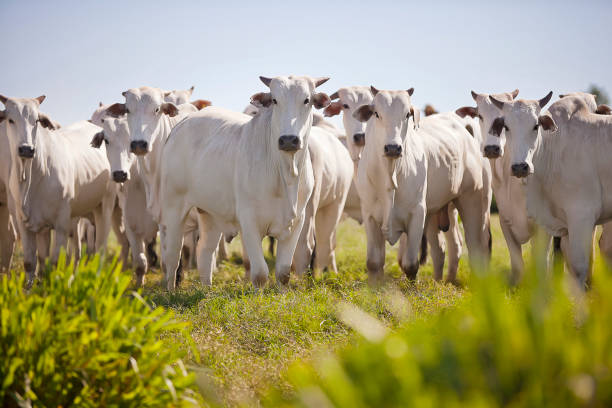

Nelore
O Nelore é uma das raças bovinas mais populares e importantes do Brasil. Originária da Índia, essa raça
zebuína adaptou-se perfeitamente ao clima tropical brasileiro. O Nelore é conhecido por sua resistência,
adaptabilidade, musculatura bem desenvolvida e qualidade da carne.
